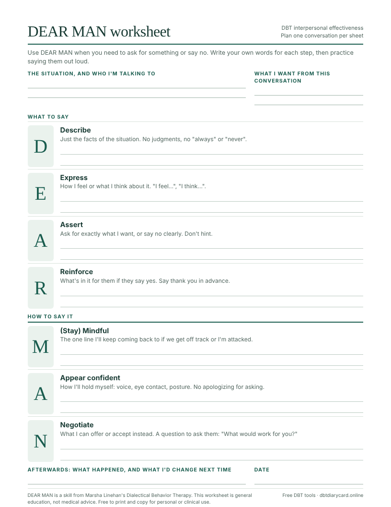

DBT skills · Interpersonal effectiveness
DEAR MAN: the DBT Skill for Asking for What You Need
DEAR MAN is a seven-step script for making a request or saying no without blowing up or backing down. Here is each step, a full example, and a free PDF worksheet to plan your own conversation.
What is DEAR MAN?
DEAR MAN is one of the DBT interpersonal effectiveness skills from Marsha Linehan's Dialectical Behavior Therapy. It stands for Describe, Express, Assert, Reinforce, (stay) Mindful, Appear confident and Negotiate. You will also see it written as DEARMAN.
The skill is for moments when you have a clear objective: you want someone to do something, stop doing something, or accept your no. The first four letters are what you say. The last three are how you say it.
The DEAR MAN steps
| Step | What to do | Sounds like |
|---|---|---|
| DDescribe | State the facts of the situation. Leave out judgments and words like "always" and "never". | "The schedule changed twice this month with less than a day's notice." |
| EExpress | Say how you feel or what you think about it. Don't expect the other person to guess. | "I feel stressed when that happens, because I can't arrange childcare." |
| AAssert | Ask for what you want, or say no, in plain words. Hinting is not asserting. | "I'd like at least three days' notice before my shifts change." |
| RReinforce | Explain what the other person gains by saying yes. Thank them up front. | "With notice I can say yes to extra shifts much more often." |
| MMindful | Keep your attention on the objective. Repeat your request and ignore attacks or side issues. | "I hear that. I'd still like three days' notice." |
| AAppear confident | Use a steady voice, eye contact and upright posture, even if you don't feel confident. | No mumbling, no "sorry to bother you, it's probably nothing". |
| NNegotiate | Be willing to give to get. Offer alternatives, or ask the other person for a solution. | "Would two days work? What would make that possible on your side?" |
D: Describe
Start with what a camera would have recorded. Facts are hard to argue with, and they tell the other person exactly which situation you mean. "You never give me notice" invites a debate about "never". "The schedule changed twice this month" does not.
E: Express
Say your feeling or opinion as your own, using "I" statements. This step is short. One sentence is usually enough, and it keeps the request from sounding like a demand out of nowhere.
A: Assert
This is the step people skip. Ask for one specific thing, or say no clearly. If the other person could walk away unsure what you asked for, say it again more plainly.
R: Reinforce
Tell them why saying yes is good for them, or for the two of you. People are more likely to agree when they can see the benefit. If you are saying no, reinforce by explaining what the no makes possible.
M: (Stay) Mindful
Conversations drift. The other person may change the subject, bring up old arguments, or criticize you. Two techniques from the DBT manual help here: the broken record, which means calmly repeating your request, and ignoring attacks, which means not taking the bait.
A: Appear confident
You don't have to feel confident. You only need to look and sound it. Stand or sit upright, keep your voice even, and drop the apologies for having a need.
N: Negotiate
If the answer is no, look for a version both of you can live with. You can also hand the problem over: "What do you think we should do?" This is sometimes called turning the tables.
DEAR MAN example script
Here is the whole skill in one conversation. Alex wants their manager to stop changing shifts at the last minute.
- Describe"My schedule changed twice this month, both times the day before the shift."
- Express"I feel stressed when that happens, because I have to find childcare overnight."
- Assert"I'd like at least three days' notice when my shifts change."
- Reinforce"If I get that notice, I can cover extra shifts much more often, and I won't have to call out."
- MindfulManager: "Everyone's schedule is hard right now." Alex: "I understand it's hard. I'm asking for three days' notice."
- Appear confidentAlex keeps an even tone, looks at the manager, and doesn't apologize for asking.
- Negotiate"If three days isn't always possible, could we agree on two, with a text as soon as you know?"
Using DEAR MAN to say no
The same steps work for turning down a request. A friend asks to borrow your car for the weekend:
"You've asked to borrow my car this weekend (describe). I'm not comfortable lending it, because I need it for work on Saturday (express). So I'm going to say no (assert). I'd rather say no now than say yes and resent it (reinforce). I can drive you to the station on Friday if that helps (negotiate)."
Free DEAR MAN worksheet (PDF)
This one-page worksheet has a writing space for each step, plus room to note the situation, what you want, and how it went afterwards. Fill one in before a hard conversation, then practice the lines out loud.
One page · no sign-up · free to print and copy for personal or clinical use

DEAR MAN, GIVE and FAST
DBT teaches three interpersonal effectiveness skills that are used together. Before a conversation, decide which of the three goals matters most this time, and lean on that skill.
| Skill | Goal | Stands for |
|---|---|---|
| DEAR MAN | Getting what you want | Describe, Express, Assert, Reinforce, Mindful, Appear confident, Negotiate |
| GIVE | Keeping the relationship | Gentle, Interested, Validate, Easy manner |
| FAST | Keeping your self-respect | Fair, no Apologies, Stick to values, Truthful |
Common DEAR MAN mistakes
- Describing with judgments. "You're being inconsiderate" is an opinion, so it belongs nowhere in the Describe step.
- Skipping the ask. Describing and expressing without asserting leaves the other person to guess what you want.
- Asking for several things. One conversation, one request.
- Over-explaining. Long justifications give the other person more to argue with. Keep each step to a sentence or two.
- Treating it as a guarantee. DEAR MAN improves your odds. The other person can still say no.
- Trying it for the first time in a crisis. Practice on small requests first, such as asking a server to fix an order.
If your emotions are very high, use a distress tolerance skill first and come back to the conversation later. If you are dealing with someone who may be unsafe, plan the conversation with your therapist.
Tracking DEAR MAN on your diary card
DEAR MAN is listed under interpersonal effectiveness on most DBT diary cards. Tick it on any day you used it, including days you only planned or rehearsed the script, and add a short note such as "DEAR MAN with manager about schedule, got two days' notice." Over a few weeks you can see which kinds of requests are getting easier.
You can track it on the free online DBT diary card, which lists DEAR MAN, GIVE, FAST and 27 other skills, or on the printable blank diary card. To see what a completed week looks like, read the DBT diary card example.
Questions
What does DEAR MAN stand for?
Describe, Express, Assert, Reinforce, (stay) Mindful, Appear confident, Negotiate. DEAR covers what you say. MAN covers how you say it.
Can I use DEAR MAN to say no?
Yes. The steps are the same. Describe the request, express how you feel about it, assert a clear no, and reinforce by saying how the no helps the relationship or what you can do instead.
What if DEAR MAN doesn't work?
It raises the odds of a yes but cannot guarantee one. If the answer is still no, negotiate, ask the other person what they would suggest, or decide whether to ask again more firmly later. Using the skill well counts as practice even when you don't get the result.
Can I use DEAR MAN in a text or email?
Yes. Writing gives you time to check each step, and the worksheet doubles as a draft. Keep the message short: one or two sentences for each of Describe, Express, Assert and Reinforce.
Is it DEAR MAN or DEARMAN?
Both spellings refer to the same skill. Linehan's manual writes it as two words, DEAR MAN.
Sources
- Linehan, M. M. (2015). DBT Skills Training Manual (2nd ed.). Guilford Press. Interpersonal effectiveness module: objectives effectiveness (DEAR MAN), relationship effectiveness (GIVE) and self-respect effectiveness (FAST).
- Linehan, M. M. (2015). DBT Skills Training Handouts and Worksheets (2nd ed.). Guilford Press. Interpersonal Effectiveness Handouts 5–7.
- University of Washington Behavioral Research & Therapy Clinics
Important: This article is general education, not medical or mental-health advice. If you are in danger or might act on urges to hurt yourself, call or text 988 in the US, or contact local emergency services.
Track your skills every day
DBT Diary Card: Skills Tracker for iPhone and iPad reminds you to log skills, locks with Face ID, and exports a PDF for your session. Free download with paid full access.